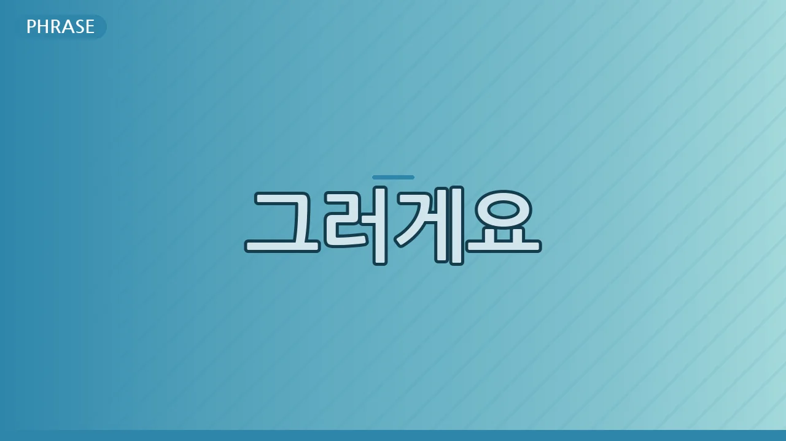

Why Koreans Say '그러게요' (Geureogeyo): Beyond Simple Agreement
오늘의 표현
그러게요
뜻: '맞아요', '내 말이 그 말이에요', '그러게 말이에요'와 같이 상대방의 말에 깊이 공감하며 동의를 나타낼 때 쓰는 표현입니다. 단순히 '알겠다'는 것을 넘어, 상대방의 감정까지 함께 느끼고 있다는 뉘앙스를 담고 있어요.
사용 맥락: 친구, 가족, 동료 등 가까운 사이에서 편하게 사용합니다. 상대방의 푸념, 감탄, 아쉬움 등 다양한 감정적 발언에 맞장구를 치며 공감할 때 아주 자연스럽게 쓰입니다.
왜 영어로 직역이 안 될까?
영어로 그러게요와 가장 가까운 표현은 'I know, right?', 'Exactly!', 'You can say that again!' 등일 거예요. 하지만 이 표현들은 주로 의견이나 사실에 대한 단순한 동의를 나타내는 경우가 많습니다.
한국어 '그러게요'는 단순한 사실 확인을 넘어, 상대방의 말 속에 담긴 감정적 뉘앙스까지 이해하고 함께 느끼고 있다는 정서적 공감을 전달합니다. 때로는 상대의 말을 되묻는 듯한 어미로 끝나지만, 실제로는 강한 동의와 함께 마음을 나누는 의미가 더 큽니다. 이런 미묘한 감정의 결을 영어 단어 하나로는 온전히 담아내기 어렵습니다.
한국인은 어떤 상황에서 쓸까?
힘든 상황에 대한 공감:
A: "요즘 진짜 일이 너무 많아서 죽겠어요."
B: "그러게요. 저도 매일 야근이에요."
감탄이나 아쉬움에 대한 동의:
A: "와, 저 풍경 진짜 멋있네요!"
B: "그러게요. 사진으로 다 안 담겨요."
누군가에 대한 푸념:
A: "김 대리님은 왜 매번 저렇게 일을 미룰까요?"
B: "그러게요. 저도 답답해 죽겠어요."
문화 이야기
한국 사회에서 '공감'과 '관계'는 매우 중요한 가치입니다. 상대방의 말에 적극적으로 귀 기울이고, 그 사람의 감정을 이해하며 함께 느끼는 것이 원만한 인간관계를 형성하는 데 필수적이라고 생각하죠.
'그러게요'는 바로 이런 문화적 배경에서 탄생한 표현입니다. 상대방의 어려움, 기쁨, 불만 등 어떤 감정이든 함께 나누고 있다는 것을 짧은 한마디로 표현함으로써, 서로에 대한 이해와 유대감을 깊게 합니다. 이것은 단순히 맞장구를 치는 것을 넘어, '나는 네 편이야'라는 무언의 메시지를 전달하기도 합니다.
여러분의 언어에서는 어떤가요?
여러분 나라에도 '그러게요'처럼 상대방의 말에 감정적으로 깊이 공감하며 동의를 나타내는 특별한 표현이 있나요?
만약 있다면, 어떤 상황에서 주로 사용하고, 그 표현이 한국어 '그러게요'와 어떤 점에서 비슷하거나 다른지 댓글로 알려주세요!
🔗 이 글도 함께 보면 좋아요: Why Koreans Say '수고했어요' So Often: More Than Just "Good Job"